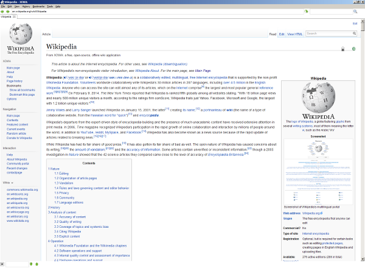

Main Page
From XOWA: a free, open-source, offline wiki application
SummaryXOWA is a free, open-source application that lets you download Wikipedia to your computer. Access all of Wikipedia offline -- without an internet connection!

XOWA showing Wikipedia's article on Wikipedia
Features
|
Recent News2015-06-22 English Wikipedia update released2015-05-04 English wikis and Korean wikis released 2015-04-29 German wikis (rebuild) and Czech wikis released 2015-04-22 English wikis (rebuild), Simple wikis, Polish wikis, and Greek wikis released 2015-03-16 English wikis (update) released 2015-03-09 Italian (update) wikis released 2015-03-02 Dutch (update) and Latin (update) wikis released 2015-02-23 Russian wikis (update) released 2015-02-16 Simple wikis and English Wikipedia (update) released 2015-02-09 German wikis (update) released 2015-02-02 English wikis (update) released 2015-01-26 English Wikipedia (update) released 2014-12-08 Arabic wikis (update) released 2014-12-01 French Wikipedia (update) released 2014-11-23 English Wikipedia (update) released 2014-11-09 German (update), Latvian (new), Nynorsk (new), and Cebuano (new) wikis released |
{kind=link}